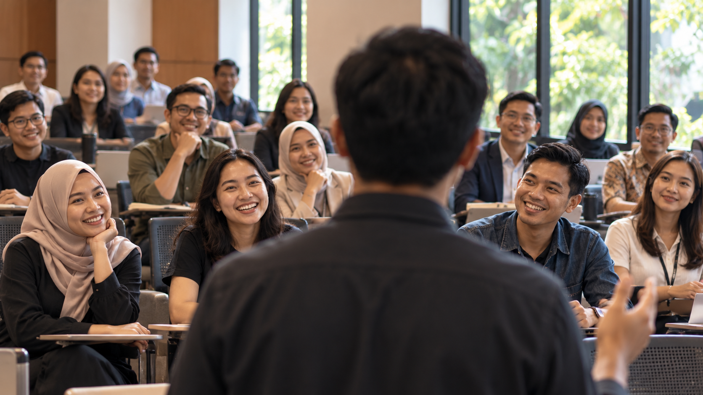
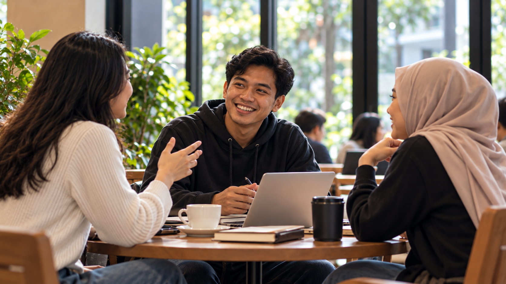

IKASADA / 01 Contoh kegiatan
Diskusi lintas angkatan
Ruang berbagi cerita, pengalaman, dan gagasan antar-alumni.
Kegiatan
Gulir untuk menjelajah ↓ · Empat contoh kegiatan, bukan agenda aktual.
Ruang berbagi cerita, pengalaman, dan gagasan antar-alumni.
Sesi belajar bersama untuk mempertemukan keahlian dan membuka peluang kolaborasi.
Kesempatan untuk kembali menyapa dan memperluas jejaring lintas angkatan.

Percakapan tentang perjalanan berkarya dan langkah berikutnya bersama komunitas.
